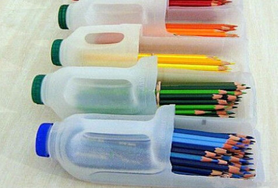

Adavantage

The advantages of garbage sorting are as follows:
Reduce land occupation:
Some substances in domestic garbage are not easily degraded, causing serious erosion of the land. Garbage sorting, removing substances that can be recycled and not easily degraded, reducing the amount of garbage by more than 60%.
Reduce pollution:
At present, China's garbage disposal mostly adopts sanitary landfill or even simple landfill, occupying tens of thousands of acres of land; and the insects flies, the sewage overflows, the smell is smoky, and the environment is seriously polluted.
Waste plastics in the soil can lead to reduced crop production; abandoned plastic waste is eaten by animals, and accidents that cause animal death occur. Recycling can therefore reduce the hazard.
Turning waste into treasure
ne ton of waste plastic can be reprocessed with 600 kg of diesel. Recycling 1,500 tons of waste paper can save the trees from being used for the production of 1,200 tons of paper. One ton of cans can be melted to form a good ton of aluminum, which can consume 20 tons of aluminum ore. 30%~40% of domestic garbage can be recycled, and the resources of this small profit should be cherished. You can also use the cans to make pencil cases, which are both environmentally friendly and resource-saving.
Moreover, other substances in the garbage can also be converted into resources, such as food, grass and fabric can be composted to produce organic fertilizer; waste incineration can generate electricity, heat or refrigeration; bricks and ash can be processed into building materials and so on. All kinds of solid waste are mixed together as garbage, and sorting is a resource.